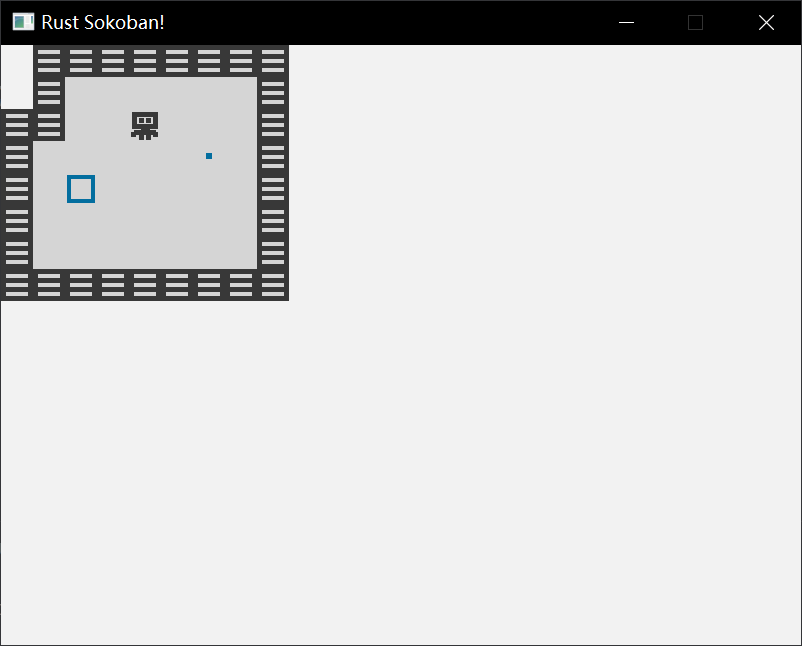

n2t 学好累，找点新玩具玩玩，闻闻味儿，找点乐子，etc… 参考 https://sokoban.iolivia.me 。
虽然只是找点乐子，但确实学到了点东西，把 rust 的模块化熟悉了一下，了解了一下 ECS，见识了一下 Rust 的框架的抽象能做到何种程度（在类型的花活上简直比隔壁 ts 还牛逼……），必可活用于下一次。
ECS ECS，即 Entity-Component System，是一种游戏架构模式，它遵循组合优于继承的原则：
Component：持有实体的特定特征的纯数据 结构，比如位置，是否可渲染，移动
Entity：Entity 由复数的 Component 组成，比如玩家可能包括位置，是否可渲染，移动等 Component，地面可能只包括位置和是否可渲染。Entity 差不多只是一个有着唯一标识符（似乎也是通过 Component 去标识，这些 Component 称为 Marker Component，不包含任何数据）的 Component 的容器
System：System 使用 Component 和 Entity，并包含利用这些数据的行为和逻辑。比如，一个渲染 System 可能会迭代所有可渲染（即包含相应 Component）的 Entity 并绘制它们。只有 System 包含行为 ，Component 利用 System 去执行操作（就像 Visitor）
推箱子游戏中包含如下 Entity，以及这些 Entity 由什么 Component 组成（把 Component 当成“配置”或字段？）
Player: Position, Renderable, Movable
Wall: Position, Renderable
Floor: Position, Renderable
Box: Position, Renderable, Movable
Box spot（箱子的目标位置）: Position, Renderable
这书使用了下面的库：
ggez：一个 2D 游戏引擎，负责一些底层的玩意——绘制窗口，事件循环……
specs：ECS 库，所有业务都在这儿了（ECS 和游戏引擎是分开的，这点有点酷，也就是说能用其它的架构模式去料理这个游戏引擎）
glam：一个 3D 绘图库，用这玩意去绘图
跟着写代码的时候时刻区分哪些部分是 ggez 的，哪些部分是 specs 的，这还蛮有趣的，似乎是第一次把两个轮子结合在一起去做点什么，之前都是只借助内置库以及一个轮子。
定义 Component 和 Entity 之前学习迭代器的时候看到它的 collect 就很好奇它的实现方式，现在又看到相似的用法了。这玩意实际上实现上没有任何动态的部分——它接受一个实现特定 trait 的类型，在编译时直接找到相应 trait 的实现。这和 java 中的类似玩意不一样，那个需要利用上反射（根本原因是 Java 的接口和抽象类无法对 static 方法进行约束）或者得把相应方法引用给传进去。
下面是注册 Component，以及对 Entity 的定义，注意 Entity 并非是以类型的形式去定义，这允许 Entity 在运行时以及通过配置文件等方式去修改 ，况且使用类型去定义的话反而更麻烦，System 无法轻易找到哪些 Entity 包含它要的 Component：
1 2 3 4 5 6 7 8 9 10 11 12 13 14 15 16 17 18 19 20 21 22 23 24 25 26 27 28 29 #[derive(Debug, Component, Clone, Copy)] #[storage(VecStorage)] pub struct Position {u8 ,u8 ,u8 , pub fn register_components (world: &mut World) {Box >();pub fn create_wall (world: &mut World, position: Position) {create_entity ()with (Position { z: 10 , ..position })with (Renderable {"/images/wall.png" .to_string (),with (Wall {})build ();
Rendering System 开始定义 System，System 需要能够修改外界事物，因此需要包含 Context——ggez 提供的用于操作游戏状态的接口，以可变借用的形式。
pub struct RenderingSystem <'a > {'a mut Context,impl <'a > System<'a > for RenderingSystem <'a > {type SystemData = (ReadStorage<'a , Position>, ReadStorage<'a , Renderable>);fn run (&mut self , data: Self ::SystemData) {let (positions, renderables) = data;
然后，其业务就可以加到事件循环中了（每次循环都创建一次……但这玩意其实确实挺便宜）：
impl event ::EventHandler<ggez::GameError> for Game {fn draw (&mut self , context: &mut Context) -> GameResult {let mut rs = RenderingSystem { context };run_now (&self .world);Ok (())
关于 Rendering System 的业务：
清空（上一帧）屏幕
获取所有 Position 和 Renderable（同时包含这两个 Component 的 Entity？），按 z 轴排序
根据 Renderable 中存储的路径加载图片，在 Position 中的相应位置绘制图片
展示图片
1 2 3 4 5 6 7 8 9 10 11 12 13 14 15 16 17 18 19 20 21 impl <'a > System<'a > for RenderingSystem <'a > {type SystemData = (ReadStorage<'a , Position>, ReadStorage<'a , Renderable>);fn run (&mut self , data: Self ::SystemData) {let (positions, renderables) = data;clear (self .context, graphics::Color::new (0.95 , 0.95 , 0.95 , 1.0 ));let mut entities = (&positions, &renderables).join ().collect::<Vec <_>>();sort_by_key (|(p, _)| p.z);for (position, renderable) in entities {let image = Image::new (self .context, &renderable.path).expect ("expected image" );let x = position.x as f32 * TILE_WIDTH;let y = position.y as f32 * TILE_WIDTH; let draw_params = DrawParam::new ().dest (Vec2::new (x, y));draw (self .context, &image, draw_params).expect ("expected render" );present (self .context).expect ("expected to present" );

该动起来了。要移动 Player，需要捕获输入事件，并通知 specs 去进行处理。
要捕获输入事件，只需要“重写”key_down_event即可：
fn key_down_event (mut self ,mut Context,bool ,println! ("Key pressed: {:?}" , keycode);
如何去通知 specs 去处理呢？specs 中有一种名为 Resource 的概念，Resource 是可全局共享的数据或服务，它不属于任何单个 Entity，可被一个或多个 System 去使用。可以把键盘输入作为一种可全局访问的数据，即作为 Resource。另外的典型 Resource 包括游戏配置。实际上屏幕也可以作为 Resource…
要定义一个 Resource，只需要将其“注册”进去即可，这里虽然说是注册，但实际上是插了个实例。这玩意让我想到 React 的 Provider。
这时候就要问了——卧槽write_resource是怎么根据泛型得到我要的类型的资源的实例的？实际上有个TypeId::of::<T>()方法能获取T的 typeId，即该类型的唯一标识符，得到了标识符便能够得到实例，就像某种依赖注入。
1 2 3 4 5 6 7 8 9 10 11 12 13 14 15 16 17 18 19 20 #[derive(Default)] pub struct InputQueue {pub keys_pressed: Vec <KeyCode>,pub fn register_resources (world: &mut World) {insert (InputQueue::default ())fn key_down_event (mut self ,mut Context,bool ,println! ("Key pressed: {:?}" , keycode);let mut input_queue = self .world.write_resource::<InputQueue>();push (keycode);
Rendering System 只读取 Component，但 Input System 需要读取 Component 和 Resource，然后写 Component。一个很酷的地方是，Input System 不需要拥有任何字段，它只负责根据输入去更新 Player 的 Movement 即可。Rendering System 的业务放到 update 过程中。
1 2 3 4 5 6 7 8 9 10 11 12 13 14 15 16 17 18 19 20 21 22 23 24 25 26 27 28 29 30 31 32 33 34 35 36 pub struct InputSystem {}impl <'a > System<'a > for InputSystem {type SystemData = ('a , InputQueue>,'a , Position>,'a , Player>fn run (&mut self , data: Self ::SystemData) {let (mut input_queue, mut position, players) = data;let Some (key) = input_queue.keys_pressed.pop () else {return ;for (Position { x, y, .. }, _) in (&mut position, &players).join () {match key {1 ,1 ,1 ,1 ,fn update (&mut self , context: &mut Context) -> GameResult {let mut is = InputSystem {};run_now (&self .world);Ok (())
System 有点像策略，它本身不持有 World，而是接受 World 去做操作，因此动态地增减 System 是轻松的，World 也不需要知道当前有多少个 System 还在活跃。所以这又是一个取舍……
推箱子 当前 Player 能到处动了，但和环境没有任何交互，会穿过墙壁和箱子。为此需要添加相应业务。考虑再定义两个 Marker，标识 Entity 可以被移动和无法被移动；Player 和箱子是可以被移动的，而墙壁无法被移动；其它的部分和移动功能无关，因此不进行任何标识 。
#[derive(Component, Default)] #[storage(NullStorage)] pub struct Movable ;#[derive(Component, Default)] #[storage(NullStorage)] pub struct Immovable ;
然后就是修改 InputSystem 去添加相应逻辑了，这里允许推动多个箱子（要头疼啦），其它的规则大家都知道。主要逻辑大概是检查移动方向上的所有物体，找到连续的 Movable（包括 Player），然后看尾随的是否是 Immovable，如果不是，就移动这所有的 Movable，否则谁都动不了。
1 2 3 4 5 6 7 8 9 10 11 12 13 14 15 16 17 18 19 20 21 22 23 24 25 26 27 28 29 30 31 32 33 34 35 36 37 38 39 40 41 42 43 44 45 46 47 48 49 50 51 52 53 54 55 56 57 58 59 60 61 impl <'a > System<'a > for InputSystem {type SystemData = ('a , InputQueue>,'a >,'a , Position>,'a , Player>,'a , Movable>,'a , Immovable>,fn run (&mut self , data: Self ::SystemData) {let (mut input_queue, entities, mut positions, players, movable, immovable) = data;let Some (key) = input_queue.keys_pressed.pop () else {return ;let direction = match key {0 , -1 ),0 , 1 ),1 , 0 ),1 , 0 ),return let mut mov = HashMap::new ();let mut immov = HashMap::new ();for (entity, &Position { x, y, .. }, _) in (&entities, &positions, &movable).join () {insert ((x, y), entity.id ());for (entity, &Position { x, y, .. }, _) in (&entities, &positions, &immovable).join () {insert ((x, y), entity.id ());let (&Position { x, y, .. }, _) = (&positions, &players).join ().next ().expect ("No Player Component" );let mut to_move = Vec ::new ();for pos in std::iter::successors (Some ((x, y)), |&(x, y)| Some ((x + direction.0 , y + direction.1 )))take_while (|&(x, y)| x >= 0 && x as u16 <= MAP_WIDTH && y >= 0 && y as u16 <= MAP_HEIGHT) {if let Some (entity_id) = mov.get (&pos) {push (*entity_id)else if let Some (_) = immov.get (&pos) {return else {break for entity_id in to_move {if let Some (pos) = positions.get_mut (entities.entity (entity_id)) {0 ;1 ;
模块化 前面所有代码全写在main.rs中，为了方便维护，应按照关注点分离原则去分离代码。这里旨在感受一下 rust 的模块化。对项目内的代码，每个 rs 文件都是从它自己出发去引用其它 rs 文件（模块）：
（没细学，瞎 BB 的！）
解析从main.rs或lib.rs开始，它们是命名空间的根路径，即crate::，这两个文件中能直接看到的顶层成员，通过crate::都能看到，无论它是否加了 pub；另外使用self::表示当前目录（这似乎是默认行为）
每个 rs 文件中可以使用[pub] mod MODULE_NAME {/* ... */}去定义新的模块，或者使用[pub] mod MODULE_NAME;去“声明”新的模块，rustc 会从./MODULE_NAME.rs或./MODULE_NAME/mod.rs中找模块的实际定义；如果 mod 前缀 pub，则它是 public 的，能被外界访问到，这点对main.rs和lib.rs不适用
使用pub use可以进行“重新导出”，允许越过模块结构，直接从当前模块中导出其它模块，主要是嵌套子模块中的成员，比如这里在/systems/mod.rs中编写了mod input_system; pub use input_system::InputSystem，main.rs中就可以直接通过systems::InputStream去导入InputStream，这允许对模块结构进行抽象
gameplay 能动了，自由了，但没有目标，仍旧是带着锁链。该为这游戏设立点目标了。目标是显然的——以最小的步数把所有箱子移动到目标位置，为此，需要记录步数，需要检查箱子是否移动到目标位置。
步数，以及当前是否完成游戏，这显然是一个全局的数据，可以使用 Resource 去抽象它。InputSystem 需要读写它——如果游戏没有完成，自增步数，另外需要一个 GamePlayStateSystem——包含关于游戏完成状态的逻辑——去读写它：变更当前游戏完成状态。
两个实体在读写同一个数据…设计上是在update阶段先执行 InputStream 的逻辑，再执行 GameStateSystem 的逻辑所以没啥问题，在工业级的游戏中也会是这样有严格的顺序执行的吗？如果不是，那就不能这么操作了，考虑到一些并发问题啥的。猜测工业级的游戏中如果要实现类似功能，应该是使用某种发布订阅模式去通知 Player 有移动，而不是让 InputSystem 去进行操作——我只负责动，其它的关我屁事。
GamePlayStateSystem 需要读写游戏状态，需要读 Box，BoxSpot 和 Position 以确认箱子是否是在目标处：
1 2 3 4 5 6 7 8 9 10 11 12 13 14 15 16 17 18 19 impl <'a > System<'a > for GameplayStateSystem {type SystemData = ('a , Gameplay>,'a , Position>,'a , Box >,'a , BoxSpot>,fn run (&mut self , data: Self ::SystemData) {let (mut gameplay, positions, boxes, box_spots) = data;let box_pos = (&positions, &boxes).join ()map (|(&Position { x, y, .. }, _)| (x, y)).collect::<HashSet<_>>();if (&positions, &box_spots).join ().map (|x| x.0 )all (|&Position { x, y, .. }| box_pos.contains (&(x, y))) {
然后要绘制当前的游戏状态到屏幕上，因此 Rendering System 需要读取游戏状态。